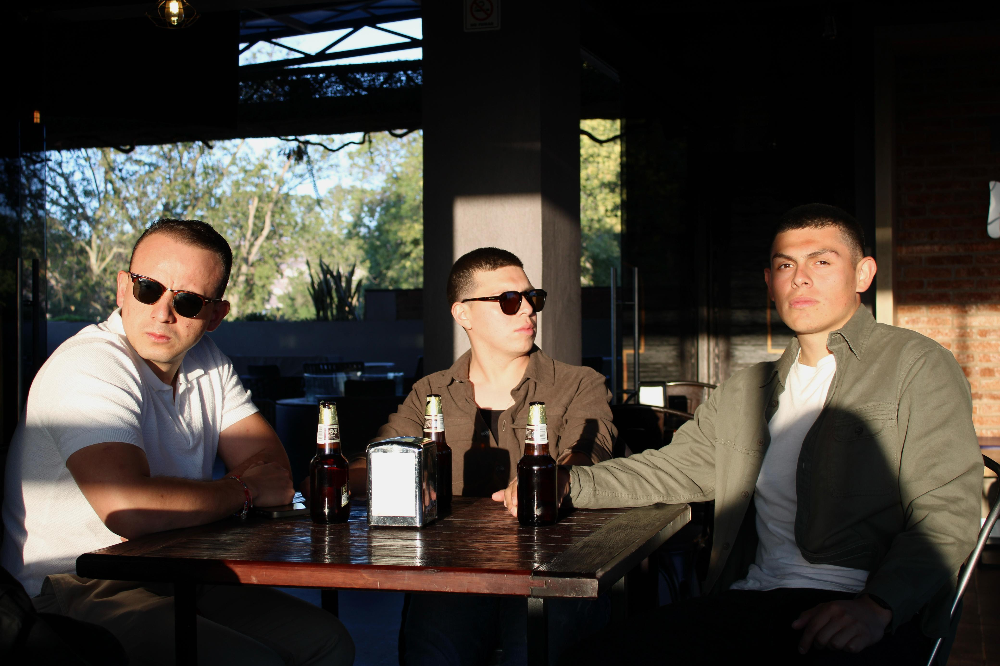

Áurea ha decidido que el mes del amor necesitaba una dosis cruda de realidad. Justo a tiempo para arruinar —o salvar— San Valentín, la agrupación mexicana acaba de lanzar "Volver a Comenzar", una apuesta auditiva que ya se encuentra disponible y que se planta firmemente como la antítesis emocional de la festividad.
Lejos del romance plástico, este sencillo de pop alternativo latino es un retrato honesto de esos encuentros fugaces que tienen el poder de desenterrar sentimientos del pasado justo antes de una despedida inevitable. Es una crónica urbana construida a base de cafés fríos, madrugadas largas, silencios pesados y recuerdos que se niegan a morir.

Musicalmente, Áurea se aleja de los excesos. El track se sostiene sobre una instrumentación contenida, dándole el protagonismo absoluto a una interpretación íntima. No es una canción de reclamo ni de rencor tóxico, sino un ejercicio de nostalgia madura; un reflejo de ese deseo imposible de congelar el tiempo y la esperanza silenciosa de reiniciar algo que ya terminó.